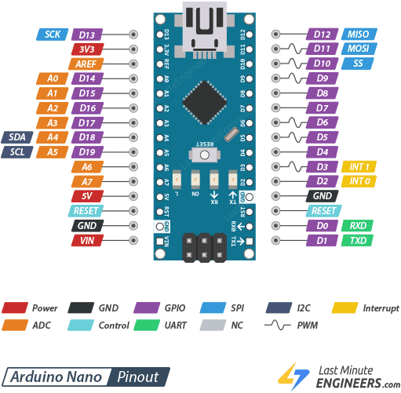

Ghost Micro - Bottom Layer Wiring (Drive System)
Overview
The Bottom Layer handles all motor control for the 4WD chassis. It uses a dedicated power system to prevent motor noise from affecting the Brain.
Components
- Controller: Arduino Nano (5V)
- Motor Driver: L298N Dual H-Bridge
- Motors: 4x TT Geared Motors (Yellow)
- Power: 2x 18650 Li-Ion (3.7V Parallel) → Dedicated Motor Battery
Wiring Diagram
graph TB
subgraph "Motor Power (Dedicated)"
BAT_M[18650 x2 Parallel<br/>3.7V 4000mAh] -->|Red| SW_M[Motor Switch]
SW_M -->|Red| L298[L298N VCC Motor]
BAT_M -->|Black| GND_M[Motor GND]
end
subgraph "Logic Power (From Brain Rail)"
BRAIN[Brain 5V Rail] -->|Red| NANO[Arduino Nano VIN]
BRAIN -->|Red| L298_LOGIC[L298N +5V Logic]
end
subgraph "Control Signals"
NANO -->|TX| STM[To STM32 RX PA3]
STM -->|TX| NANO_RX[Nano RX]
NANO -->|D5 PWM| ENA[L298N ENA]
NANO -->|D6 PWM| ENB[L298N ENB]
NANO -->|D7| IN1[L298N IN1]
NANO -->|D8| IN2[L298N IN2]
NANO -->|D9| IN3[L298N IN3]
NANO -->|D10| IN4[L298N IN4]
end
subgraph "Motors"
L298 -->|OUT1/OUT2| M1[Motor Left Front]
L298 -->|OUT3/OUT4| M2[Motor Left Rear]
L298 -->|OUT1/OUT2| M3[Motor Right Front]
L298 -->|OUT3/OUT4| M4[Motor Right Rear]
end
Physical Wiring Reference

Pin Mapping
Arduino Nano Pinout Reference

Arduino Nano → L298N
| Nano Pin | L298N Pin | Function |
|---|---|---|
| D5 (PWM) | ENA | Left Motors Speed |
| D6 (PWM) | ENB | Right Motors Speed |
| D7 | IN1 | Left Motor Direction A |
| D8 | IN2 | Left Motor Direction B |
| D9 | IN3 | Right Motor Direction A |
| D10 | IN4 | Right Motor Direction B |
| 5V | +5V (Logic) | Logic Power |
| GND | GND | Common Ground |
Arduino Nano ↔ STM32 Brain
| Nano Pin | STM32 Pin | Function |
|---|---|---|
| TX (D1) | PA3 (RX2) | Send Status to Brain |
| RX (D0) | PA2 (TX2) | Receive Commands from Brain |
[!WARNING] Programming Nano: When uploading code via USB, you must disconnect TX/RX wires to avoid conflicts with the USB serial port.
🔧 Recommended Solutions (Keep Maximum Speed)
Option 1: Use ISP Programming (Best for Production) - Use USBasp or Arduino as ISP to program Nano via ICSP header - No need to disconnect TX/RX wires! - Keeps HardwareSerial (D0/D1) for maximum speed (115200 baud stable)
Option 2: Add Jumpers (Quick Development) - Install 2-pin jumpers on TX/RX lines - Remove jumpers during upload, reconnect after - Faster than unplugging individual wires
[!NOTE] We use HardwareSerial (D0/D1) for STM32 communication because: - Faster: Hardware UART is 10x more reliable than SoftwareSerial at 115200 baud - CPU Efficient: No software overhead, uses dedicated UART hardware - No Data Loss: Hardware buffer prevents missed bytes during motor control
L298N → Motors (4WD Configuration)
| L298N Output | Motor Position |
|---|---|
| OUT1/OUT2 | Left Side (Front + Rear Parallel) |
| OUT3/OUT4 | Right Side (Front + Rear Parallel) |
[!NOTE] 4WD Wiring: Connect Front and Rear motors on each side in Parallel to the same L298N output. This allows one L298N to control all 4 motors (2 channels = 2 sides).
Power System Details
Motor Battery (Dedicated)
- Type: 2x 18650 Li-Ion in Parallel
- Voltage: 3.7V nominal (3.0V - 4.2V range)
- Capacity: ~4000-6000mAh (depends on cells)
- Connection: B+ and B- to L298N Motor Power Input
Logic Power (Shared from Brain)
- Source: Brain's H969-U 5V Rail
- Consumers: Nano VIN + L298N Logic (5V pin)
- Current: ~100-150mA (very light)
Why Separate Motor Power?
- Noise Isolation: Motor switching noise won't affect ESP32/STM32
- Voltage Stability: Brain gets clean 5V, motors get raw 3.7V
- Safety: Motor stall won't crash the Brain
🔥 Fire Protection Circuit (CRITICAL!)
1. Fuse Protection
Location: Between Motor Battery (+) and Main Switch
| Component | Rating | Purpose |
|---|---|---|
| Blade Fuse | 3A - 5A | Prevents overcurrent from battery short circuit |
| Fuse Holder | Inline | Easy replacement when blown |
Wiring:
Battery (+) → Fuse (3A) → Main Switch → L298N VCC
2. Reverse Polarity Protection
Location: Motor Battery Output
| Component | Type | Purpose |
|---|---|---|
| Diode | 1N5819 (Schottky) or 1N4007 | Prevents damage if battery connected backwards |
Wiring:
Battery (+) → Diode (Anode→Cathode) → Fuse → System
3. Flyback Diodes (Already in L298N)
[!NOTE] The L298N module already has built-in flyback diodes to protect against motor back-EMF. No additional diodes needed on motor outputs.
Protection Summary
graph LR
BAT[Battery +] -->|1| DIODE[Diode 1N5819]
DIODE -->|2| FUSE[Fuse 3A]
FUSE -->|3| SW[Main Switch]
SW -->|4| L298[L298N VCC]
Safety Components
Required Capacitors
- L298N Input: 100µF Electrolytic across Motor VCC/GND
- Each Motor: 0.1µF Ceramic across terminals (reduces RF noise)
Ground Connection
- CRITICAL: Connect Motor Battery GND to Brain GND (Common Ground)
- Use thick wire (18-20 AWG) for motor power
- Use thin wire (22-24 AWG) for logic signals
Next Steps
- ✅ Wire the motor battery pack (2x 18650 parallel)
- ✅ Connect L298N to battery and Nano
- ✅ Write Nano firmware (
body_nano.ino) - ✅ Test motor direction and speed control